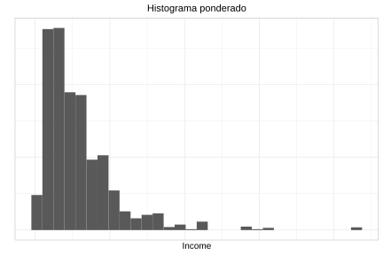
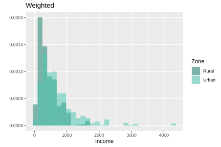
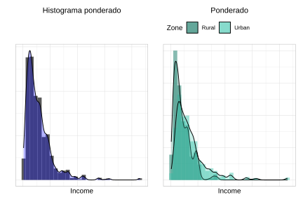
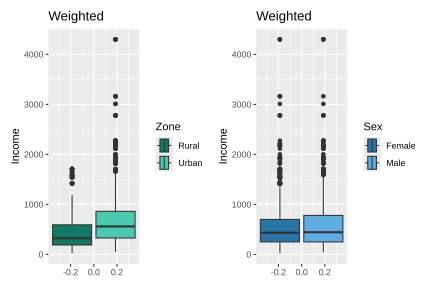
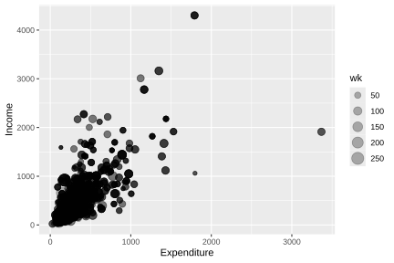

3.5 Visualización de variables continuas
La representación gráfica de variables continuas es un componente esencial en el análisis de encuestas de hogares. Los gráficos bien diseñados permiten identificar distribuciones, tendencias y relaciones entre variables, facilitando la interpretación de los hallazgos y su comunicación a distintos públicos (Wilkinson, 2005). Un aspecto fundamental en este contexto es que los gráficos deben incorporar los pesos muestrales para reflejar la distribución de la población de interés.
En esta sección se utilizan los paquetes ggplot2 (Wickham, Chang, et al., 2026) y patchwork (Pedersen, 2025) para la construcción y composición de gráficos, combinados con survey (Lumley, 2024) y srvyr (Freedman Ellis & Schneider, 2024).
3.5.1 Histogramas
Un histograma es una representación gráfica de la distribución de una variable numérica continua, construida a partir de rectángulos cuya altura es proporcional a la frecuencia de observaciones dentro de determinados intervalos de clase. En el contexto de encuestas de hogares, los histogramas ponderados permiten aproximar la distribución de la variable en la población, incorporando los factores de expansión asociados al diseño muestral.
A continuación, se presenta el histograma ponderado de la variable Income, construido incorporando los pesos muestrales (wk) con el fin de representar la distribución estimada del ingreso en la población. Los resultados obtenidos se muestran en la Figura 3.2:
weighted_income_hist <- ggplot(
data = survey_data,
aes(x = Income, weight = wk)) +
geom_histogram(aes(y = ..density..)) +
ylab("") +
ggtitle("Histograma ponderado")
weighted_income_hist
Figura 3.2: Histograma ponderado del ingreso de los hogares
En este código, se inicia la construcción del gráfico utilizando la base de datos survey_data. Dentro de aes(), el argumento x = Income indica que la variable representada en el eje horizontal corresponde al ingreso, mientras que weight = wk incorpora los pesos muestrales para construir un histograma ponderado que refleje la distribución estimada en la población. La función geom_histogram() genera el histograma y, mediante aes(y = ..density..), la altura de las barras se expresa en términos de densidad en lugar de frecuencias absolutas. Posteriormente, ylab("") elimina la etiqueta del eje vertical, y ggtitle("Histograma ponderado") agrega un título descriptivo al gráfico.
Los histogramas también permiten comparar visualmente la distribución de una variable entre distintos subgrupos de la población mediante el argumento fill, el cual asigna un color diferente a cada categoría. Por ejemplo, es posible comparar la distribución del ingreso entre zonas urbanas y rurales, como se muestra en la Figura 3.3:
zone_colors <- c(Urban = "#48C9B0", Rural = "#117864")
weighted_zone_hist <- ggplot(survey_data, aes(x = Income, weight = wk)) +
geom_histogram(
aes(y = ..density.., fill = Zone),
alpha = 0.5, position = "identity") +
scale_fill_manual(values = zone_colors) +
ylab("") +
ggtitle("Ponderado")
weighted_zone_hist
Figura 3.3: Histograma ponderado del ingreso por zona geográfica
En este código, se construye un histograma ponderado utilizando la base de datos survey_data, donde x = Income define la variable representada en el eje horizontal y weight = wk incorpora los pesos muestrales para reflejar la distribución poblacional del ingreso. La función geom_histogram() genera el histograma y, mediante aes(y = ..density.., fill = Zone), representa las barras en términos de densidad y asigna colores diferentes según la variable Zone, permitiendo comparar visualmente la distribución del ingreso entre zonas. El argumento alpha = 0.5 agrega transparencia a las barras para facilitar la superposición de los histogramas, mientras que position = "identity" permite que las distribuciones se dibujen una encima de otra en lugar de apilarse. Posteriormente, scale_fill_manual(values = zone_colors) define manualmente los colores asociados a cada zona. Finalmente, ylab("") elimina la etiqueta del eje vertical, ggtitle("Ponderado") agrega un título al gráfico.
Adicionalmente, es posible superponer curvas de densidad suavizadas mediante la función geom_density(), lo que permite visualizar de manera continua la forma de la distribución de la variable analizada. Este tipo de representación facilita la identificación de patrones como asimetrías, concentración de observaciones o la presencia de múltiples modas. Un ejemplo de este tipo de gráfico se presenta en la Figura 3.4:
weighted_income_hist + geom_density(fill = "blue", alpha = 0.3) |
weighted_zone_hist + geom_density(aes(fill = Zone), alpha = 0.3) +
theme(legend.position = "top")
Figura 3.4: Histogramas con curvas de densidad superpuestas para ingreso y gasto
3.5.2 Diagramas de caja (boxplots)
Los diagramas de caja (boxplots) permiten identificar valores atípicos y evaluar la dispersión de la distribución. Introducido por John Tukey en 1977 son una representación gráfica que resume la distribución de una variable mediante estadísticas basadas en cuartiles, permitiendo identificar la mediana, la dispersión de los datos y la presencia de valores atípicos. En el contexto de encuestas de hogares, este tipo de gráfico resulta útil para comparar distribuciones entre distintos grupos poblacionales de manera compacta y visualmente intuitiva.
Para construir boxplots ponderados en ggplot2 se utiliza la función geom_boxplot(), como se muestra en la Figura 3.5. En este caso, la función ggplot() inicia la construcción del gráfico utilizando la base de datos survey_data, donde x = Income define la variable numérica analizada y weight = wk incorpora los pesos muestrales para representar la distribución estimada en la población. Posteriormente, geom_boxplot() genera los diagramas de caja y, mediante aes(fill = Zone) o aes(fill = Sex), asigna colores diferentes a cada categoría de las variables Zone y Sex, respectivamente, facilitando la comparación visual entre grupos. La función coord_flip() invierte los ejes para presentar los boxplots de forma horizontal, mejorando así su legibilidad. Por su parte, scale_fill_manual() permite definir manualmente los colores asociados a cada categoría mediante los vectores zone_colors y sex_colors.
weighted_zone_boxplot <- ggplot(survey_data, aes(x = Income, weight = wk)) +
geom_boxplot(aes(fill = Zone)) +
ggtitle("Ponderado") +
coord_flip() +
scale_fill_manual(values = zone_colors)
sex_colors <- c(Male = "#5DADE2", Female = "#2874A6")
weighted_sex_boxplot <- ggplot(survey_data, aes(x = Income, weight = wk)) +
geom_boxplot(aes(fill = Sex)) +
ggtitle("Ponderado") +
coord_flip() +
scale_fill_manual(values = sex_colors)
weighted_zone_boxplot | weighted_sex_boxplot
Figura 3.5: Boxplots ponderados del ingreso por zona y sexo
Además de las herramientas disponibles en ggplot2, el paquete survey ofrece funciones especializadas como svyhist() y svyboxplot(), las cuales incorporan directamente las características del diseño muestral complejo en la construcción de los gráficos. Estas funciones permiten obtener representaciones gráficas coherentes con el diseño de la encuesta, facilitando el análisis exploratorio de las variables numéricas. Un ejemplo de su aplicación se presenta en la Figura 3.6.
par(mfrow = c(1, 2))
svyhist(~Income, survey_design,
main = "Ingresos por hogar",
col = "grey80", xlab = "Ingreso",
probability = FALSE)
svyboxplot(Income ~ Zone, survey_design,
col = "grey80",
ylab = "Ingreso", xlab = "Zona")
Figura 3.6: Histograma y boxplot del ingreso ajustados al diseño muestral complejo
3.5.3 Diagramas de dispersión
Los diagramas de dispersión permiten explorar visualmente la relación entre dos variables continuas, facilitando la identificación de patrones de asociación, tendencias y posibles valores atípicos. En el contexto de encuestas con diseños muestrales complejos, resulta importante incorporar la información de los pesos de muestreo para que la representación gráfica refleje adecuadamente la contribución relativa de cada observación en la población.
Según Lumley (2010), cuando se trabaja con conjuntos de datos de gran tamaño, representar todos los puntos simultáneamente puede generar gráficos difíciles de interpretar debido a la sobreposición de observaciones. Sin embargo, en muestras de tamaño moderado, una estrategia sencilla y efectiva consiste en representar los pesos mediante el tamaño de los símbolos en el gráfico de dispersión. De esta manera, las observaciones con mayor peso poblacional aparecen resaltadas visualmente. Un ejemplo de este tipo de representación se presenta en la Figura 3.7:
weighted_basic_scatter <- ggplot(
data = survey_data,
aes(y = Income, x = Expenditure)) +
geom_point(aes(size = wk), alpha = 0.3)
weighted_basic_scatter
Figura 3.7: Diagrama de dispersión entre ingreso y gasto de los hogares
En este código, se construye un diagrama de dispersión entre las variables x = Expenditure y y = Income. La función geom_point() agrega los puntos del gráfico y, mediante aes(size = wk), utiliza los pesos muestrales (wk) para controlar el tamaño de cada punto, de modo que las observaciones con mayor representación poblacional aparezcan visualmente más destacadas. El argumento alpha = 0.3 incorpora transparencia a los puntos, reduciendo el problema de sobreposición y facilitando la visualización de áreas con alta concentración de observaciones.
Adicionalmente, es posible incorporar variables de agrupamiento en los diagramas de dispersión mediante los argumentos shape y color, los cuales permiten diferenciar visualmente las observaciones según categorías específicas de la población. Esto facilita la identificación de patrones diferenciados entre grupos y mejora la interpretación de la relación entre las variables analizadas. Un ejemplo de este tipo de representación se presenta en la Figura 3.8.
weighted_zone_scatter <- ggplot(
data = survey_data,
aes(y = Income, x = Expenditure, shape = Zone)) +
geom_point(aes(size = wk, color = Zone), alpha = 0.3) +
labs(size = "Peso") +
scale_color_manual(values = zone_colors)
weighted_zone_scatter
Figura 3.8: Diagrama de dispersión entre ingreso y gasto por zona geográfica